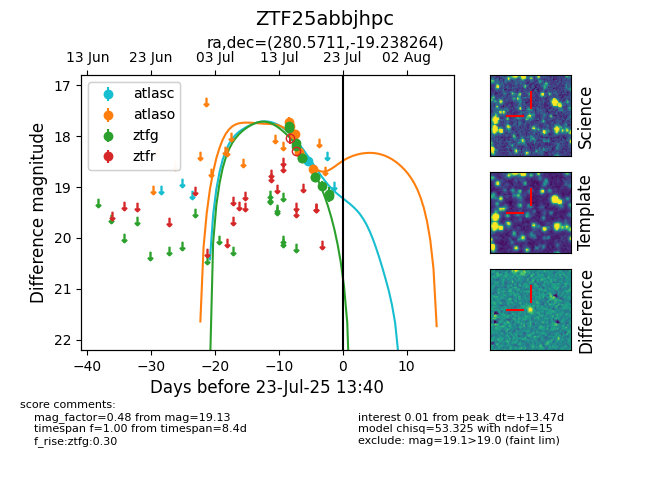

Target ZTF25abbjhpc at 2025-07-23 13:40, see:
FINK: fink-portal.org/ZTF25abbjhpc
Lasair: lasair-ztf.lsst.ac.uk/objects/ZTF25abbjhpc
ALeRCE: alerce.online/object/ZTF25abbjhpc
alt names
ZTF25abbjhpc (ztf,fink)
coordinates:
equatorial (ra, dec) = (280.5711,-19.23826)
galactic (l, b) = (14.7175,-6.70130)
photometry
last atlasc=18.48, atlaso=18.64, ztfg=19.13
1 atlasc, 6 atlaso, 11 ztfg detections
